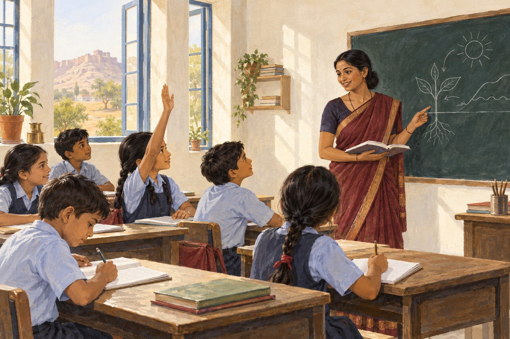

Explain, then check
No topic is closed on the day it is taught. The next class opens with questions on it, asked of the children who usually keep quiet.
A child moves through three stages here, and each has a different job to do. In all three, the test of good teaching is whether the child can explain it back to you at home.

The first year of school should make a child want to come back the next day. We spend it on speech, rhyme, colour, shape and the beginnings of letters and numbers — in short bursts, with movement in between.
The years that decide everything afterwards. The goal is simple and not negotiable: a child leaving Class V reads fluently in both languages, writes a clean paragraph, and is quick and certain with the four operations.
Subject teachers take over and the work gets heavier. We use this stage to build study habits — a notebook kept properly, homework done the same evening, a test prepared for rather than survived.
For the exact subject list at each stage and the medium of instruction, please call the school.
No topic is closed on the day it is taught. The next class opens with questions on it, asked of the children who usually keep quiet.
Notebooks are checked and corrected, not merely signed. A mistake left uncorrected is a mistake a child will keep making.
Regular tests with marks you can compare month to month, and a teacher who can tell you exactly where the gap is.
Marks are not the only thing a child takes home at the end of the year.
Prayer, the news of the day, a thought to carry into class — and a look at whether everyone has turned up.
There is open ground on every side of the building — enough for running events, kabaddi, kho-kho and seasonal matches.
Children on a stage with parents in the audience. Nothing builds a shy child's confidence faster.
Tell us their age and what they studied last year, and we will tell you honestly where they should start.